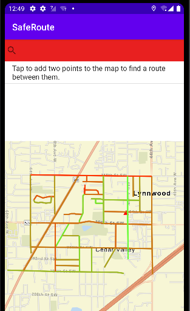
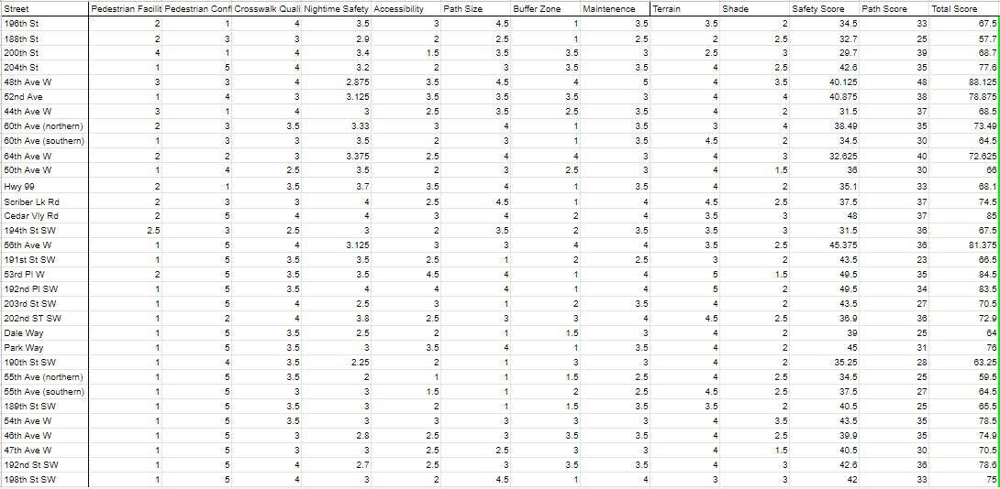
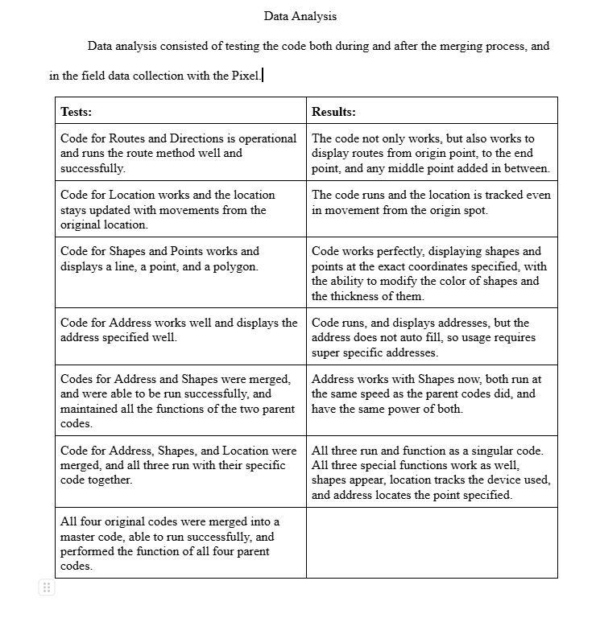

Creating an Algorithm to Determine the Safest Walking Routes

Route safety visualization and navigation interface
Not having access to an actual android phone made progress for the mobile app slower. Simulating the phone solved the issue. Learning a new language also proved to be difficult.

